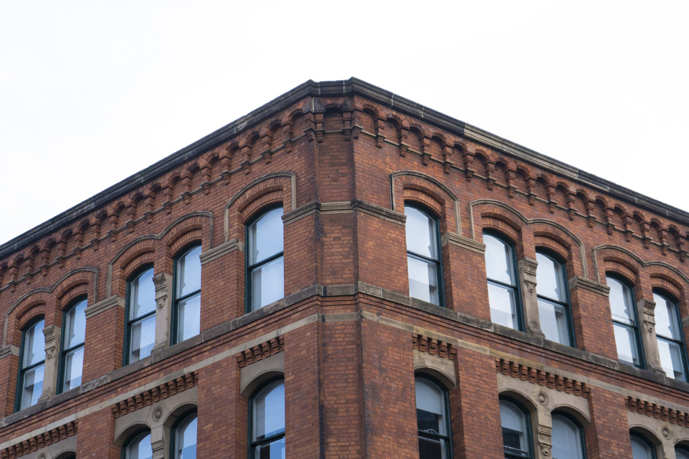

¿Quienes Somos?

En Untref School, nos enorgullece ser una
institución educativa que se destaca por brindar una educación
de calidad a nuestros estudiantes en su etapa primaria.Nos
omprometemos a crear un ambiente de aprendizaje estimulante,
eguro y enriquecedor para que cada niño pueda alcanzar su máximo potencial.
Nuestra misión es proporcionar una educación integral que promueva el desarrollo académico, emocional y social de nuestros estudiantes. Creemos en la importancia de cultivar un amor por el aprendizaje, fomentar la curiosidad intelectual y desarrollar habilidades esenciales que los preparen para enfrentar los desafíos del mundo actual.
¿Porque Elegirnos?
En Untref School, nos esforzamos por cultivar valores éticos y ciudadanos en nuestros estudiantes. Promovemos la tolerancia, el respeto, la responsabilidad y el compromiso con la comunidad. Buscamos formar ciudadanos conscientes y solidarios, listos para marcar la diferencia en el mundo que los rodea.
Nuestras instalaciones están diseñadas para crear un entorno propicio
para el aprendizaje. Contamos con aulas modernas y equipadas, laboratorios, biblioteca y espacios recreativos. Estamos comprometidos con la seguridad y el bienestar de nuestros estudiantes,
y nos aseguramos de que se sientan cómodos y motivados para aprender.
Novedades
¡Mantente al día con las últimas noticias de Untref School!
Celebración del Día del Libro: Recientemente, celebramos el Día del Libro
con una serie de actividades emocionantes para fomentar el amor por la
lectura en nuestros estudiantes.
Excursión educativa al Museo de Ciencias Naturales: Nuestros
estudiantes de cuarto grado disfrutaron de una emocionante excursión
educativa al Museo de Ciencias Naturales.
charlas sobre seguridad en línea: En línea con nuestro compromiso
de fomentar la alfabetización digital y la seguridad en línea.
Presentación de proyectos de ciencias: Nuestros estudiantes de
sexto grado presentaron sus emocionantes proyectos científicos durante
nuestra feria anual de ciencias
Propuesta educativa - Plan de estudios

En Untref School, nos enorgullece ofrecer una amplia gama de
propuestas educativas que enriquecen la experiencia de aprendizaje de
nuestros estudiantes. Nuestro objetivo es brindarles las herramientas
necesarias para desarrollar todo su potencial y prepararlos para los
desafíos del siglo XXI.
A continuación, te presentamos algunas de nuestras propuestas
educativas clave:
Programa Académico Riguroso: Nuestro programa académico está
diseñado para brindar una educación sólida en todas las áreas del
conocimiento, incluyendo matemáticas, ciencias, lenguaje,
ciencias sociales y arte. Nuestros planes de estudio se basan
en estándares educativos internacionales y están adaptados
para satisfacer las necesidades individuales de cada estudiante.
Enfoque en el Pensamiento Crítico y la Resolución de Problemas:
Fomentamos el pensamiento crítico y la resolución de problemas
como habilidades fundamentales para el éxito en el mundo actual.
Nuestros estudiantes aprenden a analizar, evaluar y encontrar
soluciones creativas a través de proyectos, actividades y desafíos
que les permiten aplicar sus conocimientos en situaciones reales.
Tecnología y Alfabetización Digital: Reconocemos la importancia
de la tecnología en la sociedad actual. Integramos el uso de
herramientas tecnológicas en nuestras clases para promover la
alfabetización digital y desarrollar habilidades en el uso
responsable y creativo de la tecnología. Esto prepara a
nuestros estudiantes para un mundo cada vez más digitalizado.